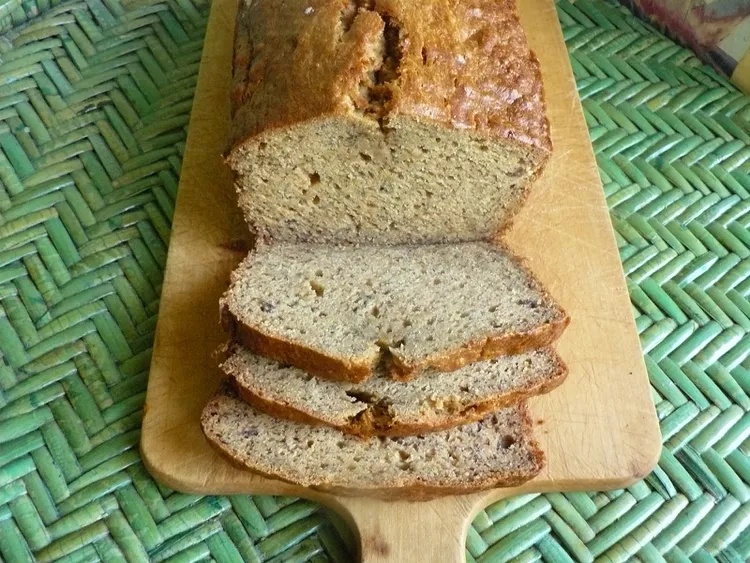

This banana bread recipe creates the most delicious, moist loaf with loads of banana flavor. Why compromise the banana flavor? Friends and family love my recipe and say it's by far the best! It tastes wonderful toasted. Enjoy!
Our most popular banana bread is moist, delicious, and absolutely packed with banana flavor. This Allrecipes community favorite will quickly become your go-to banana bread recipe!
You likely already have all the ingredients you'll need for this banana bread recipe on hand. If not, here's what to add to your grocery list:
You'll find the full, step-by-step recipe below — but here's a brief overview of what you can expect when you make this simple banana bread:
This banana bread is super moist thanks to butter, eggs, and brown sugar (which adds more moisture than white sugar). Plus, mashed bananas have plenty of moisture on their own. Make sure you store the banana bread properly to keep it moist for several days.
This banana bread recipe should be perfectly baked after about an hour in an oven preheated to 350 degrees F. You'll know it's done when a toothpick inserted into the center of the loaf comes out clean. Make sure you let the bread sit in the pan for about 10 minutes before turning it out. Otherwise, it might not stay in one piece.